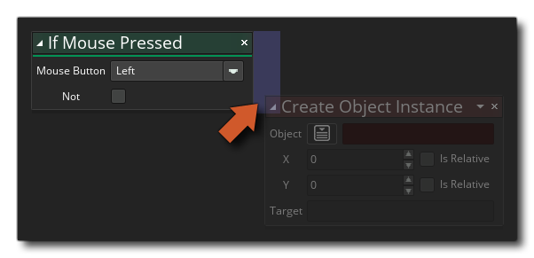

如果键位点击 如果键位点击
如果键位点击 如果键位点击
此动作检测键盘键被按下的最初状态（即键盘点击）在键位按钮点下的瞬间，它将返回 真 ，其它时间返回假。如果你勾选了not 选项，此功能将会相反，也就是说，动作会检测键盘键是否 没有被点击，如果被点击了就返回假，其余情况返回真。 .
注意：如果要将动作添加进 "if" 动作块，它们应该被放置到动作的一边，如下图所示：
 在“if”块之后执行的任何其他操作都将执行。

参数 描述 键 需要检测的键的名称 非 否定选项（true变为false，反之亦然)

上述代码每一帧检查空格键状态，如果按住空格键，就检查是不是点击空格键如果检测到点击事件为 真 则播放一个音效，并且让精灵 的混合颜色变为红色。如果空格键没有被按住，则检查是不是释放，如果是，则把精灵的混合颜色变为白色。